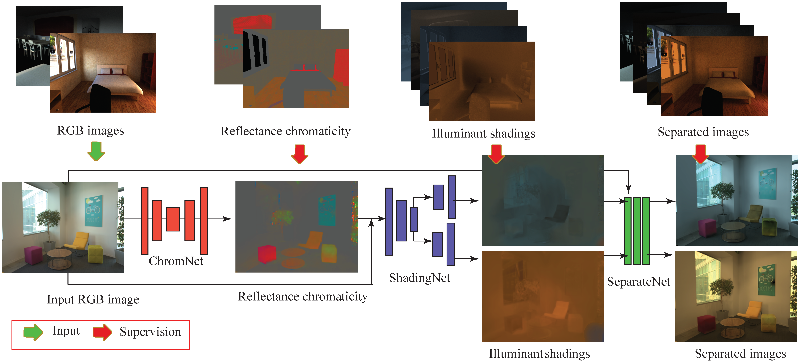
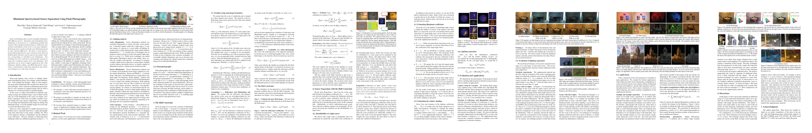

We present a method to separate a single image captured under two illuminants, with different spectra, into the two images corresponding to the appearance of the scene under each individual illuminant. We do this by training a deep neural network to predict the per-pixel reflectance chromaticity of the scene, which we use in a physics-based image separation framework to produce the desired two output images. We design our reflectance chromaticity network and loss functions by incorporating intuitions from the physics of image formation. We show that this leads to significantly better performance than other single image techniques and even approaches the quality of the prior work that require additional images.
Zhuo Hui, Ayan Chakrabarti, Kalyan Sunkavalli, and Aswin C. Sankaranarayanan
CVPR 2019
We provide additional results in the supplementary docs.
We provide our codebase here, please cite our paper when you use the code.